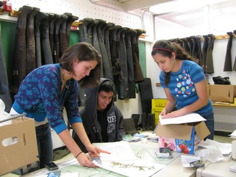
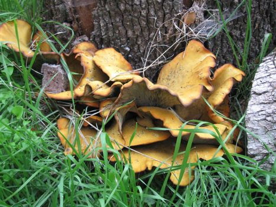
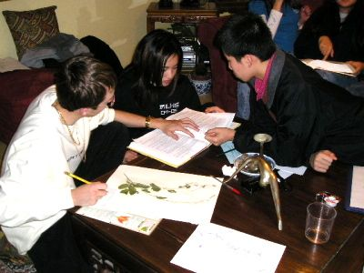
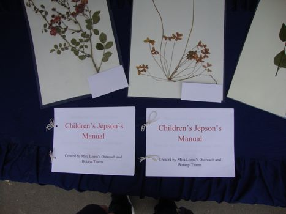

BOTANICAL SURVEY
Botanical Survey evaluates the health of the vegetation at the Arcade Creek by monitoring the spread of invasive species, and by collecting samples of indigenous plants biyearly to analyze the degree of plant diversity present.
Botany Students
Student meeting.
Botany Students
a unique plant at the Creek
Botany Students
recording observations on a plant
Botany Students
presentation of a Jepson's manual to children
Botany Students 2012
The Botany students examine a sample from the creek durring a meeting.

The Botanical Survey (Botany) study collects, preserves, and identifies samples of plants that grow along the riparian corridor of the Arcade Creek. The study's first objective is to produce an extensive herbarium of all fall and spring samples, which functions as a reference of the area's plant diversity from year to year. In addition, Botany maps the percent coverage of invasive plant species, including Himalayan Blackberry, Periwinkle, English Ivy, Red Sesbania, Fan Palm and Catalpa.
Invasive plant species tend to out-compete native plant species, reducing the plant diversity of the creek and resulting in the starvation of animal species that rely on these indigenous plants. By mapping the nonnative species biyearly, Botany helps the Restoration study to easily locate and eradicate spreading populations. Moreover, Botany maintains a database of the invasive species and native species present at each site along the arcade creek, facilitating year to year comparisons and allowing a direct method of checking when certain species spread, or disappeared, from specific locations.
STUDY FILES:
Botany ProtocolLabelled List of Plants
List of Invasive Species
Botany Glossary
Botany Terms to Know
Data: 2014 Spring All Sites
Data: 2013 Fall All Sites
Data: 2011-2012 Fall Site A
Data: 2011-2012 Fall Site B
Data: 2011-2012 Fall Site C
Data: 2011-2012 Fall Site D
Data: 2011-2012 Fall Site E
Data: 2011-2012 Fall Site F
Data: 2011-2012 Fall Site G
Data: 2011-2012 Spring Site A
Data: 2011-2012 Spring Site B
Data: 2011-2012 Spring Site C
Data: 2011-2012 Spring Site D
Data: 2011-2012 Spring Site E
Data: 2011-2012 Spring Site F
Data: 2011-2012 Spring Site G
Plant Identification Form